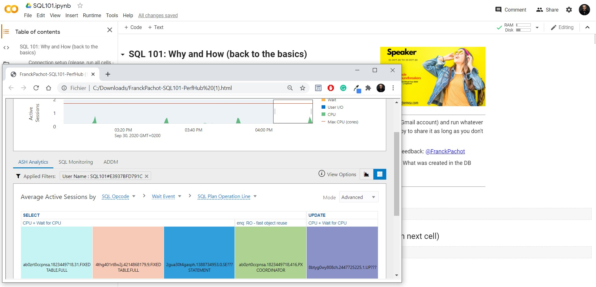

This was first published on https://www.dbi-services.com/blog/oracle-adb-jupyter/ (2020-09-30)
Republishing here for new followers. The content is related to the versions available at the publication date.
.
My first attempt to connect to an Oracle database from a Jupyter Notebook on Google Colab was about one year ago:
https://medium.com/@FranckPachot/a-jupyter-notebook-on-google-collab-to-connect-to-the-oracle-cloud-atp-5e88b12282b0
I’m currently preparing a notebook as a handout from my coming SQL101 presentation where I start with some NoSQL to discover the benefits of RDBMS and SQL. I’m running everything on the Oracle Database because it provides all APIs (NoSQL-like key-value, with SODA, documents with OSON, and of course SQL on relational tables) within the same converged database. The notebook will connect to my Autonomous Database in the Oracle Free Tier so that readers don’t have to create a database themselves to start with it. And the notebook runs on Google Colab which is a free environment where people (with a Gmail account) can run it and change the queries as they want to try new things.
The notebook is there at sql101.pachot.net, but as I said, I’m currently working on it…
In this post, I’m sharing a few tips about how I install and run connections from SQLcl, sqlplus and cx_Oracle. There are probably many improvements possible and that’s one reason I share it in this blog… Feedback welcome!
Google Colab backend runs Ubuntu 18.04 and in order to tun the Oracle Client I need to install libaio:
dpkg -l | grep libaio1 > /dev/null || apt-get install -y libaio1
I test the existence before calling apt-get because I don’t want a “Run all” to take too much time.
Then I download the Instant Client, and SQLcl, and the cloud credential wallet to connect to my database which I’ve put on a public bucket in my free tier Object Store:
[ -f instantclient/network/admin/sqlnet.ora ] || wget --continue --quiet https://objectstorage.us-ashburn-1.oraclecloud.com/n/idhoprxq7wun/b/pub/o/sql101.zip && unzip -oq sql101.zip && sed -e "1a export TNS_ADMIN=$PWD/instantclient/network/admin" -e "/^bootStrap/s/$/| cat -s/" -i sqlcl/bin/sql
I test the existence with the presence of one file (sqlnet.ora)
I hardcode the TNS_ADMIN in the SQLcl script
The -e “/^bootStrap/s/$/| cat -s/” is a dirty workaround for the black likes bug in SQLcl 20.2 (I’ll remove it when 20.3 is out)
All this is quick and dirty, I admit… I have my presentation to prepare 😉
I’ve build the wallet with passwords as I mentioned in a previous post
You also check this notebook I published a few weeks ago if you want to see how to install the instant client yourself:
Too lazy to open a free Autonomous Database? I let you play on mine from a @ProjectJupyter notebook on @GoogleColab. You just need a Google account to run it and connect to my ATP to play with SQL and NoSQL (SODA)
😎please be smart, don't break it 🙏https://t.co/tprVZCOlws pic.twitter.com/IAERboN4oU
— Franck Pachot (@FranckPachot) August 16, 2020
Then I call a CREATE_USER procedure I have created in my database. The idea is that a public user is accessible (the password in the wallet) with minimal privileges just to run this procedure that creates a unique user for the Colab session.
The most important is where I define a the Python magics to run SQLcl and sqlplus:
import socket
from IPython.core.magic import register_line_cell_magic
@register_line_cell_magic
def sqlcl(line,cell=None):
if cell is None:
get_ipython().run_cell_magic('script', 'sqlcl/bin/sql -s -L \'"SQL101#'+socket.gethostname().upper()+'"/"SQL101#'+socket.gethostname()[::-1]+'"\'@sql101_tp',line)
else:
get_ipython().run_cell_magic('script', 'sqlcl/bin/sql -s -L \'"SQL101#'+socket.gethostname().upper()+'"/"SQL101#'+socket.gethostname()[::-1]+'"\'@sql101_tp',cell)
# register %sqlplus and %%sqlplus for easy run scripts
@register_line_cell_magic
def sqlplus(line,cell=None):
if cell is None:
get_ipython().run_cell_magic('script', '/content/instantclient/sqlplus -s -L \'"SQL101#'+socket.gethostname().upper()+'"/"SQL101#'+socket.gethostname()[::-1]+'"\'@sql101_tp',line)
else:
get_ipython().run_cell_magic('script', '/content/instantclient/sqlplus -s -L \'"SQL101#'+socket.gethostname().upper()+'"/"SQL101#'+socket.gethostname()[::-1]+'"\'@sql101_tp',cell)
The %sqlcl will call SQLcl in silent mode with the line (for %sqlcl) or cell (for %sqlcl)
The %sqlplus is similar. The only advantage over SQLcl is that it is faster to start.
Both have the connection string hardcoded in the same way as I generated the user and password (the username from the host name, the password as well).
Then I install the Oracle driver for Python:
pip install cx_Oracle
With it I can run SQL queries from Python or even SQLAlchemy.
I also load the SQL magic from Catherine Devlin
%load_ext sql
%config SqlMagic.autocommit=False
%config SqlMagic.autopandas=True
More info on: https://github.com/catherinedevlin/ipython-sql
I define the connection string for both:
$import socket,cx_Oracle,os
connection=cx_Oracle.connect('"SQL101#'+socket.gethostname().upper()+'"',"SQL101#"+socket.gethostname()[::-1], "sql101_tp")
os.environ['DATABASE_URL']='oracle://"SQL101#'+socket.gethostname().upper()+'":"SQL101#'+socket.gethostname()[::-1]+'"@sql101_tp'
Then I have 4 ways to run queries:
The examples are in the SQL101 notebook and you can play with them.
Just one more thing, which is probably perfectible:
import cx_Oracle, base64
from IPython.core.display import HTML
cursor=connection.cursor()
HTML("If you want to view performance of my database during the last hour: 1,is_omx =>1,report_level=>'basic',outer_start_time=>created-1/24,selected_start_time=>created) from user_users").fetchone()[0].read().encode('utf-8')).decode('utf-8')+"'>Download PerfHub")
This displays a download link to get the Performance Hub report covering the time since the beginning of my connection (actually the user creation).
The idea is:
I do that because I prefer to have the performance hub in a plain window, and also because it does not run in an IFRAME as-is. 
This is a very powerful environment for demos. You can use it there on Google Colab, connected to my database. Or create your own Oracle Autonomous Database in the always free tier and even run Jupyter in this free tier (see how from Gianni Ceresa)
{kind=link}